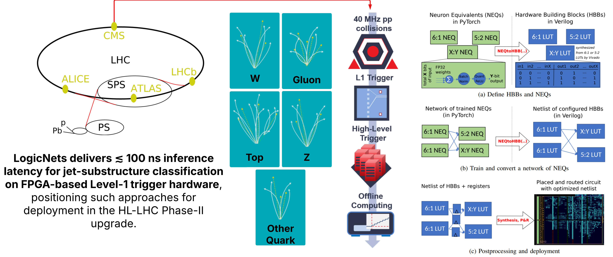

Hi, I'm Yash!
I'm a Ph.D. candidate in Electrical & Computer Engineering at Cornell, advised by Mohamed S. Abdelfattah and a Student Researcher at Google Research.
I work on RL4E (teaching language models to make themselves more efficient), and universal regression.
Feel free to reach out if you'd like to chat AI, hardware-software co-design, or cool research ideas!
Research Highlights

Transformers for Regressing on Google Compute Clusters
We found that you can use language models to perform regression directly on unstructured text data, like system logs, to predict numerical outcomes. To give a sense of scale, the regressors can nearly perfectly capture the behavior of a cell of servers, sometimes as large as a building!
The cool part is that instead of just predicting a single number, the model learns to output the full probability distribution. This means it can capture complex or even multi-modal shapes in the data, reflecting the true range of possible outcomes.

LogicNets: Mapping Neurons To Hardware
By collapsing each neuron into a tiny, hand-tuned bundle of logic gates, LogicNets turns an entire deep network into native FPGA fabric—no CPUs, no firmware loops.
The whole jet-tagging model streams through in under 15 ns, sustaining hundreds of millions of inferences per second, so the ATLAS or CMS Level-1 trigger can make physics decisions in real time and still have head-room for everything else on the board.